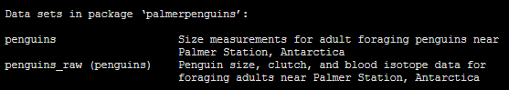
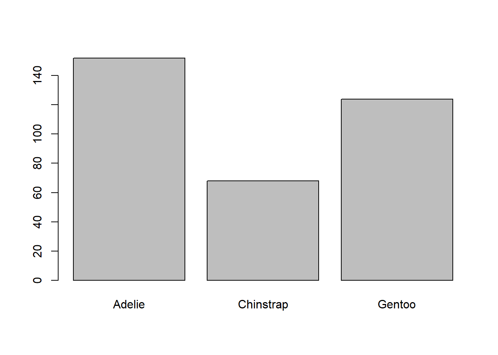
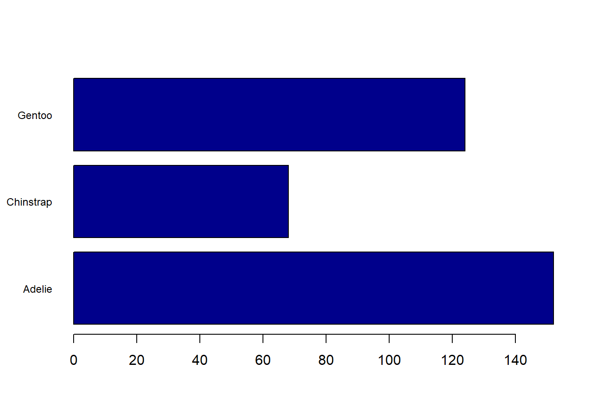
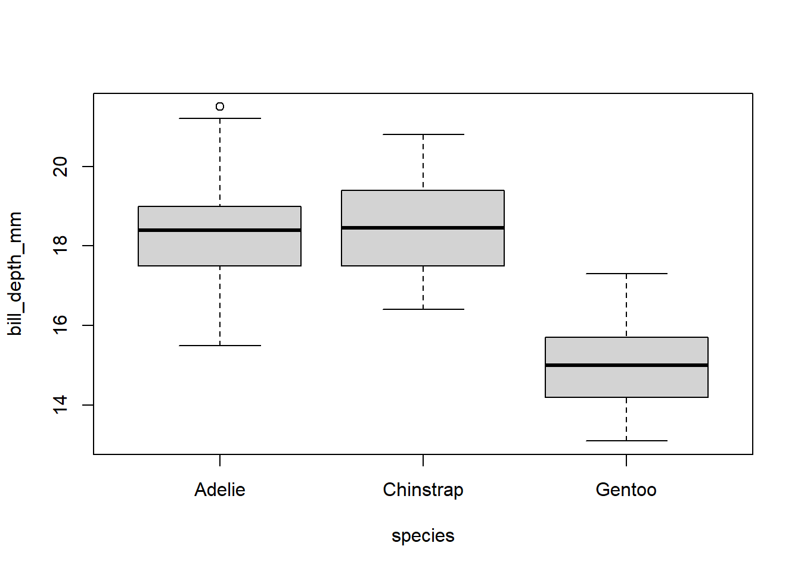
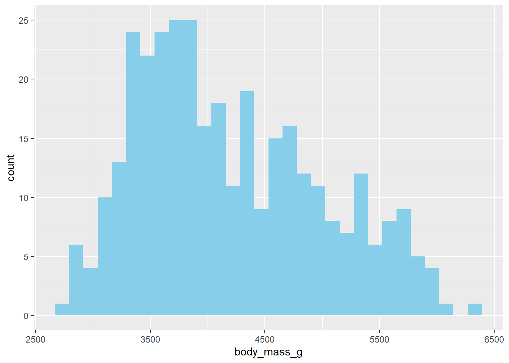
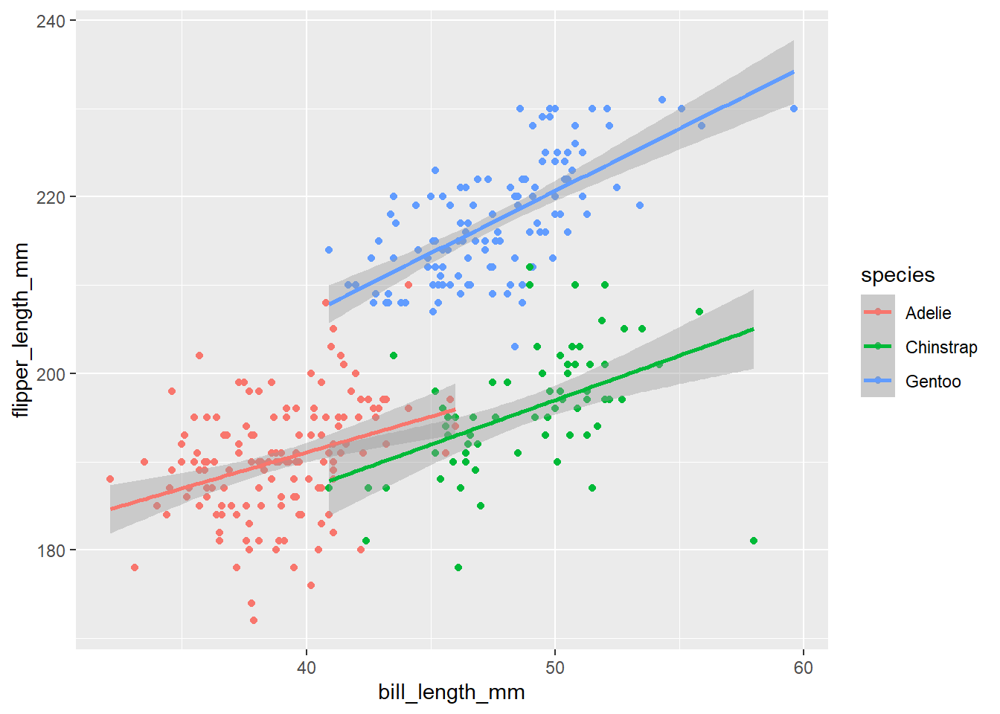
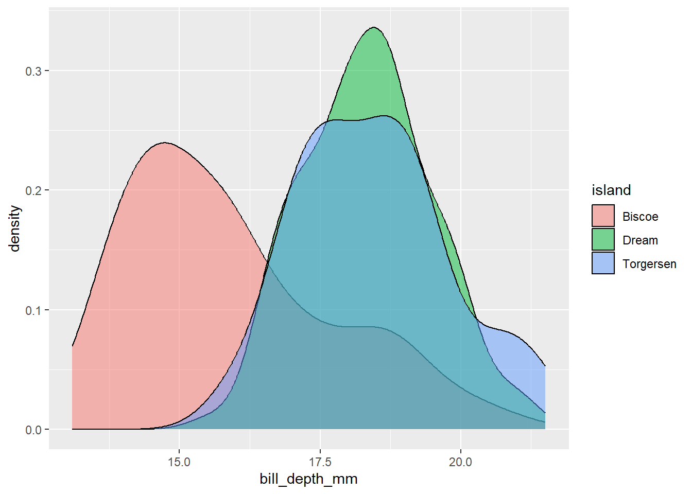
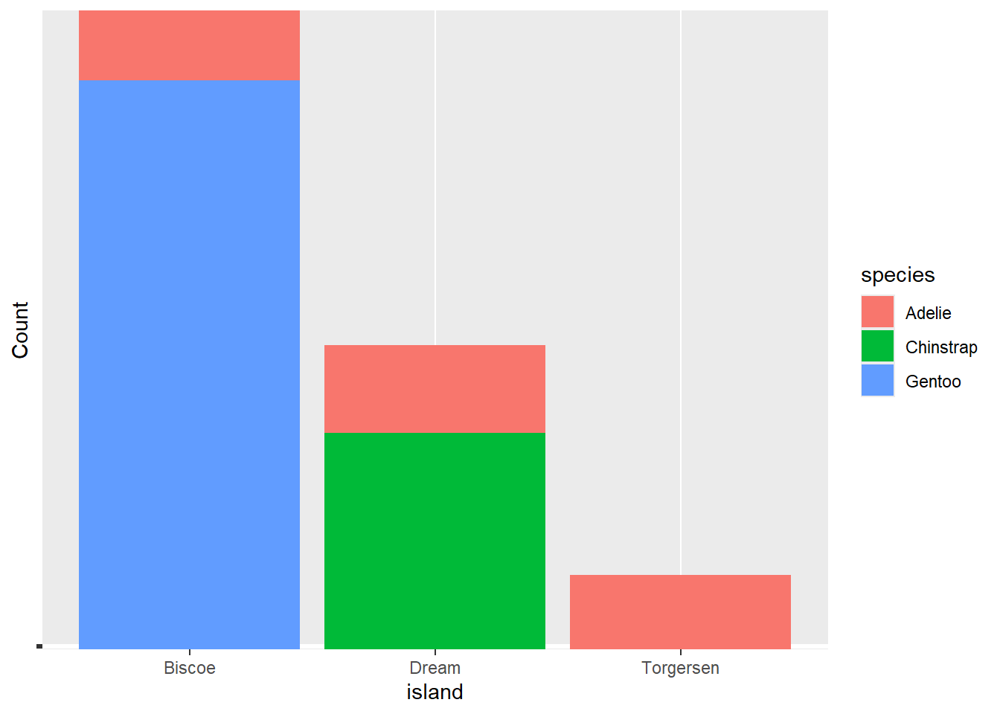
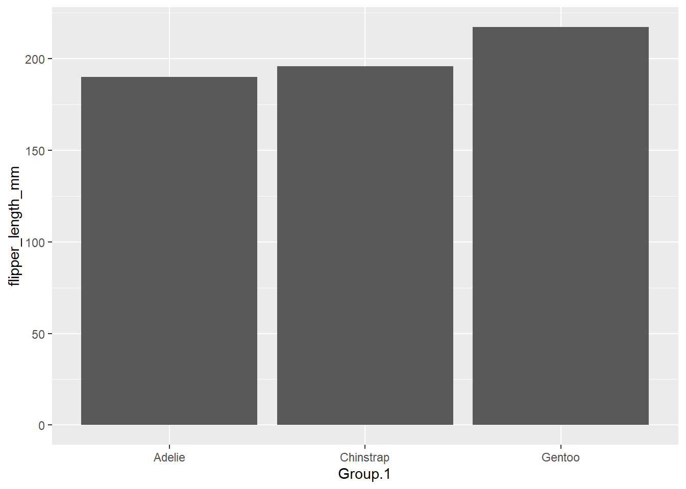

# Install (if required) and load the palmerpenguins package
# install.packages("palmerpenguins")
library(palmerpenguins)Warning: package 'palmerpenguins' was built under R version 4.4.2Note: this practical is adapted from INFS 2049 Experimental Design - Practical 1 by Joshua Chopin 2021
Welcome to the first practical of Experimental Design! In this course, you will use the R programming language to explore data, perform statistical tests, and design experiments. This first practical will serve as a refresher on using R and introduce a few basic statistical tools.
In this practical, you will:
The dataset for this activity is the palmerpenguins dataset (Horst AM, Hill AP, Gorman KB (2020). palmerpenguins: Palmer Archipelago (Antarctica) penguin data. R package version 0.1.1. https://allisonhorst.github.io/palmerpenguins/index.html (DOI 10.5281/zenodo.3960218)).

This dataset originates from the Palmer Station in Antarctica and contains observations of penguin species, including information such as species name, flipper length, and sex, among other variables. The dataset features three species of penguins: Chinstrap, Adélie, and Gentoo, each offering unique characteristics for analysis.
As you work through the tasks, you will encounter questions marked with Q. While you are not required to submit answers, engaging with these questions by trying them out in R will help solidify your learning.
This practical is self-paced, allowing you to work through the material at a time that suits you. To get started, ensure that:
Take your time to complete the tasks, experiment with the code, and reflect on the results. The goal is to build your confidence in using R and applying statistical concepts.
1. Loading the data
In R, there are two main ways to access the Palmer Penguins data for this practical. While the dataset is conveniently available as part of a package, it is common in real-world scenarios to work with raw data files line .csv. Below, you’ll find instructions for both approaches.
Option 1: Using the palmerpenguins Package The dataset is included in the palmerpenguins package, which you can install and load using the following commands:
# Install (if required) and load the palmerpenguins package
# install.packages("palmerpenguins")
library(palmerpenguins)Warning: package 'palmerpenguins' was built under R version 4.4.2To see the datasets available in the package, use:
# List datasets in the package
data(package = "palmerpenguins")
The package provides two datasets: penguins and penguins_raw. For this practical, we will use the cleaned penguins dataset.
Option 2: Using the provided .csv file If you’d like to simulate a more typical scenario, you can load the data from the provided .csv file. This requires the readr package, which you can install and use as follows:
# Install the readr package (if required)
# install.packages("readr")If you choose to use the .csv file, we assume that the dataset has already been downloaded and saved in your current working directory. Here’s how you can confirm and manage your working directory in R:
# Check the current working directory
# getwd()The ouput will display the folder where R is currently looking for files. Ensure the penguins.csv file is in this directory.
setwd() function. For examp-le:# Change the working directory (replace with the path to your folder)
# setwd("path/to/your/folder")
# Verify the change
# getwd()Load the csv file:
# Load library
# library(readr)
# Load the dataset from a csv file
# penguins2 <- read_csv("penguins.csv")spec() to retrieve the full column specification for this data.show_col_types = FALSE to quiet this message.
From this point onward, the practical will assume you are using the penguins dataset loaded directly from the palmerpenguins package.
If, for any reason, you prefer to use the dataset from the .csv file, make sure to adjust the commands accordingly to reference the penguins2 variable instead. Alternatively, you can rename penguins2 to penguins for consistency.
2. Explore the dataset
Inspecting the Data with head(): The head() function provides a quick look at the first six rows of the dataset, showing column names and a preview of the data types in brackets:
In the output, you might notice that additional columns, such as year, are part of the dataset but not fully displayed due to space constraints.
# Display the first six rows of the dataset
head(penguins)# A tibble: 6 × 8
species island bill_length_mm bill_depth_mm flipper_length_mm body_mass_g
<fct> <fct> <dbl> <dbl> <int> <int>
1 Adelie Torgersen 39.1 18.7 181 3750
2 Adelie Torgersen 39.5 17.4 186 3800
3 Adelie Torgersen 40.3 18 195 3250
4 Adelie Torgersen NA NA NA NA
5 Adelie Torgersen 36.7 19.3 193 3450
6 Adelie Torgersen 39.3 20.6 190 3650
# ℹ 2 more variables: sex <fct>, year <int>Examining the Structure of the Dataset with str(): The str() function, short for structure, provides a concise summary of any R object. For data frames like this one, it shows the number of rows and columns, the data types of each variable, and the factor levels for categorical variables.
For example, you’ll see that Species has three levels: Adelie, Chinstrap, and Gentoo, while Island also has its distinct set of factor levels.
# Display the structure of the dataset
str(penguins)tibble [344 × 8] (S3: tbl_df/tbl/data.frame)
$ species : Factor w/ 3 levels "Adelie","Chinstrap",..: 1 1 1 1 1 1 1 1 1 1 ...
$ island : Factor w/ 3 levels "Biscoe","Dream",..: 3 3 3 3 3 3 3 3 3 3 ...
$ bill_length_mm : num [1:344] 39.1 39.5 40.3 NA 36.7 39.3 38.9 39.2 34.1 42 ...
$ bill_depth_mm : num [1:344] 18.7 17.4 18 NA 19.3 20.6 17.8 19.6 18.1 20.2 ...
$ flipper_length_mm: int [1:344] 181 186 195 NA 193 190 181 195 193 190 ...
$ body_mass_g : int [1:344] 3750 3800 3250 NA 3450 3650 3625 4675 3475 4250 ...
$ sex : Factor w/ 2 levels "female","male": 2 1 1 NA 1 2 1 2 NA NA ...
$ year : int [1:344] 2007 2007 2007 2007 2007 2007 2007 2007 2007 2007 ...
Exploring Basic Descriptive Statistics with summary(): The summary() function generates key descriptive statistics for each variable:
If you’re unfamiliar with penguin anatomy:
# Generate summary statistics for the dataset
summary(penguins) species island bill_length_mm bill_depth_mm
Adelie :152 Biscoe :168 Min. :32.10 Min. :13.10
Chinstrap: 68 Dream :124 1st Qu.:39.23 1st Qu.:15.60
Gentoo :124 Torgersen: 52 Median :44.45 Median :17.30
Mean :43.92 Mean :17.15
3rd Qu.:48.50 3rd Qu.:18.70
Max. :59.60 Max. :21.50
NA's :2 NA's :2
flipper_length_mm body_mass_g sex year
Min. :172.0 Min. :2700 female:165 Min. :2007
1st Qu.:190.0 1st Qu.:3550 male :168 1st Qu.:2007
Median :197.0 Median :4050 NA's : 11 Median :2008
Mean :200.9 Mean :4202 Mean :2008
3rd Qu.:213.0 3rd Qu.:4750 3rd Qu.:2009
Max. :231.0 Max. :6300 Max. :2009
NA's :2 NA's :2 Q. What does the second quartile represent? Is it included in this summary?
3. Data visualisations with base R
Barplot of Species Counts First, we can create a barplot to visualise the number of observations for each species in the dataset. Using the table() function, we generate counts of each species and then pass this to barplot().
# Create a table of species counts
speciescounts <- table(penguins$species)
# Generate a simple barplot
barplot(speciescounts)
Observation: In this initial barplot, some labels may be cut off due to size constraints. To address this, we can adjust the plot’s appearance using additional arguments in the barplot() function.
Enhancing the Barplot: By modifying parameters like label size (cex.names), orientation (horiz), bar colours (col), and label alignment (las), we can improve the barplot’s readability and aesthetics.
# Enhanced barplot with customisation
barplot(
speciescounts,
horiz = TRUE,
col = "darkblue",
las = 1, # Rotate axis labels to horizontal
cex.names = 0.75 # Reduce label size for better fit
)
To explore additional customization options for barplots, refer to the documentation:
# ?barplotBoxplot for Exploring Bill Depth Boxplots are a powerful tool for visualising the distribution of a numerical variable across different groups. Here, we create a boxplot to compare bill depth (mm) among the three penguin species.
# Create a boxplot of bill depth by species
boxplot(bill_depth_mm ~ species, data = penguins)
Key Observations from the Boxplot:
To explore the strengths and limitations of boxplots further, you can refer to this resource: https://www.data-to-viz.com/caveat/boxplot.html
Q. What other hypotheses or conclusions can you make from the boxplots?
4. Beyond Base R: Visualisation with ggplot2
While Base R offers various visualisation tools with plenty of customisation options, ggplot2 (or simply ggplot) has become the most popular package for creating more complex and aesthetically pleasing plots. It is part of the tidyverse ecosystem, which includes tools that will be useful throughout your analysis journey.
Installing ggplot2 You can install ggplot2 either as part of the tidyverse package or on its own:
# Install ggplot2 via tidyverse
# install.packages("tidyverse")
# Or install ggplot2 alone
# install.packages("ggplot2")# Load the tidyverse suite
library(tidyverse)── Attaching core tidyverse packages ──────────────────────── tidyverse 2.0.0 ──
✔ dplyr 1.1.4 ✔ readr 2.1.5
✔ forcats 1.0.0 ✔ stringr 1.5.1
✔ ggplot2 3.5.1 ✔ tibble 3.2.1
✔ lubridate 1.9.3 ✔ tidyr 1.3.1
✔ purrr 1.0.2
── Conflicts ────────────────────────────────────────── tidyverse_conflicts() ──
✖ dplyr::filter() masks stats::filter()
✖ dplyr::lag() masks stats::lag()
ℹ Use the conflicted package (<http://conflicted.r-lib.org/>) to force all conflicts to become errors# Or load only the ggplot package
# library(ggplot2)For more details on ggplot2, refer to the following resource: https://rstudio.github.io/cheatsheets/html/data-visualization.html.
ggplot2 Basics In ggplot, visualisations are built from three main components:
A simple workflow involves:
ggplot().Here’s an example of a simple histogram to visualise body mass:
# Histogram of body mass with ggplot2
ggplot(data = penguins, aes(x = body_mass_g)) +
geom_histogram(fill = "skyblue")`stat_bin()` using `bins = 30`. Pick better value with `binwidth`.Warning: Removed 2 rows containing non-finite outside the scale range
(`stat_bin()`).
Handling Missing Values When you run the above code, you might notice a warning about missing values. We can identify and locate these NA values:
# Identify rows with NA values in the body_mass_g column
which(is.na(penguins$body_mass_g))[1] 4 272The warning indicates two missing values in the body_mass_g column. Missing values can occur elsewhere in the dataset too, so it is essential to handle them appropriately depending on the context and your analysis goals.
Removing Missing Values For simplicity, let’s remove any rows containing missing values and create a new dataset:
# Remove rows with NA values and create a new dataset
penguins3 <- na.omit(penguins)We can check how many rows were removed:
# Compare row counts before and after removing NA values
nrow(penguins) # Original dataset[1] 344nrow(penguins3) # Dataset without NAs[1] 333Removing NAs ensures cleaner data for further visualisation and analysis. However, always consider the implications of omitting data, especially when the proportion of missing values is significant.
Scatter Plot with Linear Model The first visualisation uses geom_point to create a scatter plot showing the relationship between bill length and flipper length for each penguin species. Then, geom_smooth(method = "lm") adds a linear regression line for each species.
ggplot(data = penguins3, aes(x = bill_length_mm, y = flipper_length_mm, colour = species)) +
geom_point() +
geom_smooth(method = "lm")`geom_smooth()` using formula = 'y ~ x'
In this plot:
Density Plot by Island The second plot uses geom_density to create overlapping density plots of bill depth for penguins found on different islands.
ggplot(data = penguins3, aes(x = bill_depth_mm, fill = island)) +
geom_density(alpha = 0.5)
This visualisation highlights that penguins on Biscoe Island tend to have smaller bill depths than those on the other islands.
Stacked Bar Plot by Species and Island The next plot uses a stacked bar plot (geom_bar(position = "stack", stat = "identity")) to show the distribution of penguin species across the islands.
ggplot(data = penguins3, aes(x = island, y = species, fill = species)) +
geom_bar(position = "stack", stat = "identity") +
theme(axis.text.y = element_blank()) +
ylab("Count")
This plot confirms that Gentoo penguins are found exclusively on Biscoe Island.
Barplot of Mean Flipper Length by Species We can use aggregate to compute the mean flipper length for each species. Then, we plot these means using a bar plot in ggplot.
# Calculate mean flipper length per species
flipper_means <- aggregate(penguins3[, 5], list(penguins3$species), mean)
flipper_means Group.1 flipper_length_mm
1 Adelie 190.1027
2 Chinstrap 195.8235
3 Gentoo 217.2353# Plot the mean flipper length by species
ggplot(data = flipper_means, aes(x = Group.1, y = flipper_length_mm)) +
geom_bar(stat = "identity")
Q. Why do we need the stat = "identity" inside of geom_bar and what does it mean?
Q. Can you change some aesthetics to make our last barplot look nicer?
Q. Create two new plots that weren’t used in this practical using graph types from the ggplotcheat sheet.
Q. (Harder, uses previous R syntax knowledge). Create a scatter plot coloured by species, with bill length along the x-axis and flipper length along the y-axis, but only using data where the body mass is greater than 3700 grams. Then create the same plot, but when body mass is less than or equal to 3700 grams.
My notes
https://support.microsoft.com/en-au/office/keyboard-shortcuts-for-international-characters-108fa0c1-fb8e-4aae-9db1-d60407d13c35
https://quarto.org/docs/authoring/markdown-basics.html